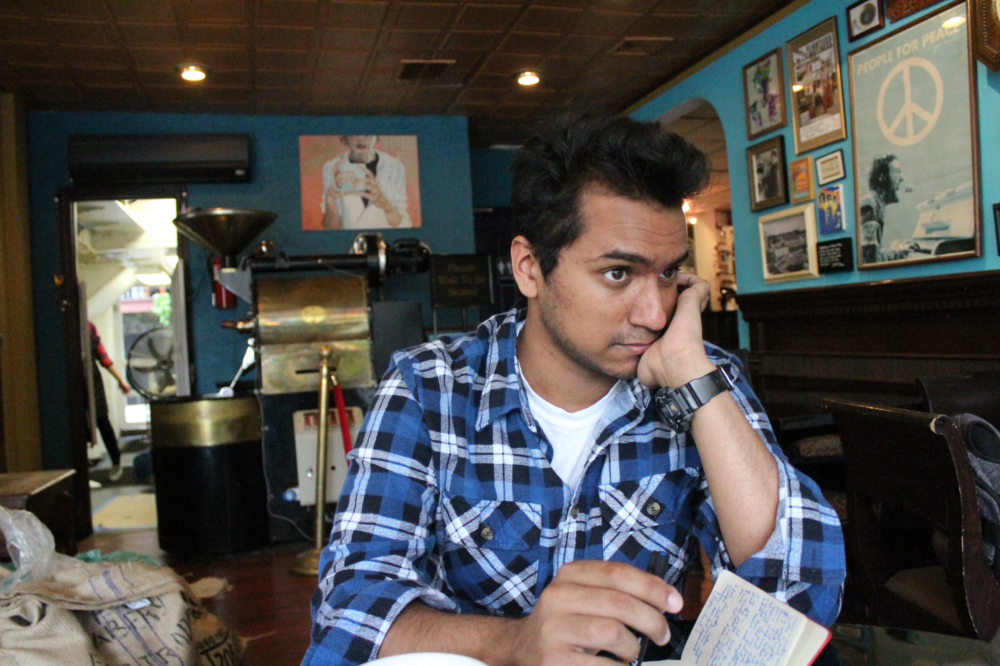

Manuela Campanelli: The Joy in Garvitational Waves

Dr. Manuela Campanelli is a Professor in the School of Mathematical Sciences, and a Program Faculty in Astrophysical Sciences and Technology in the School of Physics and Astronomy. She is also the founding Director of the Center for Computational Relativity and Gravitation. Campanelli was the recipient of the Marie Curie Fellowship (1998), the American Physical Society (APS) Fellowship (2009), and the RIT Truestee Scholarship Award (2014). She was the Chair of the Topical Group in Gravitation of the APS in 2013.
Dr. Campanelli has an extensive research experience on Einstein’s theory of General Relativity, astrophysics of black holes and gravitational waves. She is known for groundbreaking work on numerical simulations of binary black hole space times and for explorations of physical effects such as “super kicks” and spin- driven orbital dynamics.
Subject: Manuela Campanelli will be talking about how Einstein’s theory of general relativity describes the effect of gravitation on the shape of space and the flow of time. She will describe her experience of being a leader in the discover or gravitational waves. She will share the joy of experiencing her passion in dedicating her time to this amazing success.
=======Brandon Dcruz
Brandon Dcruz is a second-year undergraduate at The School of Individualized Studies at RIT. Musician, writer, composer, poet, actor, comedian, record label CEO, Facebook poker, and creator are just a few titles Brandon uses daily. At 19, Brandon is currently creating his own degree out of music, film, writing, video game design, and software engineering. He is the Literature Team Lead for Signatures, the award-winning Literary and Arts Magazine on campus, organizing a team to curate a yearly edition of a published work. He is the lead drummer for the RIT Jazz Ensemble. He composes musical scores for SOFA projects. He participates in slam poetry and open mics. On top of this, Brandon runs an independent record label called The Reading Room, working with a team of over twenty artists, web developers, A&R managers, and musicians to promote talent from around the world, often producing, managing, and Skyping artists directly.
Named after the small town he grew up in, Brandon creates music as Altona Meadows using guitars, drums, pianos, vibraphones, and whatever else he can "borrow" from the music room. He drinks black coffee, reads Kurt Vonnegut, collects records, and is very excited to share his story with the world.
Check out his record label here http://www.readingroommusic.com/ and listen to his music here https://soundcloud.com/altonameadows